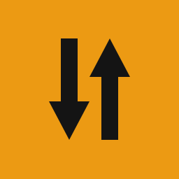

agent-channel通道代理
已停止
通道状态与控制
启动通道
停止
运行模式
-
本地代理地址
-
当前来源
-
当前活跃出站
-
落地位置
-
同步为本地系统代理（开启 Chrome / Edge 浏览器支持）
未同步
开启后系统全局浏览器开箱即用，通道停止或退出时自动还原关闭 (跨 Windows/macOS/Linux)
节点配置与管理
1. 单节点链接 (URI)
2. 订阅链接
3. 导入 JSON
粘贴单个节点链接（支持 vless://, trojan://, ss://）
粘贴订阅链接（自动提取前 5 节点并发测速优选）
导入 sing-box JSON 文件（当前已导入
0
个节点）
导入
清空导入节点
导入的节点会进入 json 槽的候选池；测试用的节点请测完清空
💾 保存配置
✅ 配置已保存到本地
保存后下次启动将自动载入
⚡ 连接测速
清空结果
测试当前节点或订阅链接中节点的连通性与延迟
启用时的出站
自动优选（把上面配置的来源并池，按延迟 + 转发验证挑最优）
自动优选 = 出口 IP 自动挑；选某一个节点 = 出口 IP 固定为它（不并池、不竞争）
AI 接口连通性测试 (真机握手)
一键测试
OpenAI API (api.openai.com)
未测试
Google Gemini (generativelanguage.googleapis.com)
未测试
Anthropic Claude (api.anthropic.com)
未测试
工具箱与内核管理
RFC 4122 v4 UUID 生成器 (供节点配置与链路调试)
生成并复制
sing-box 官方预编译内核
检测中
正在读取本地内核版本...
检查官方更新
立即更新内核